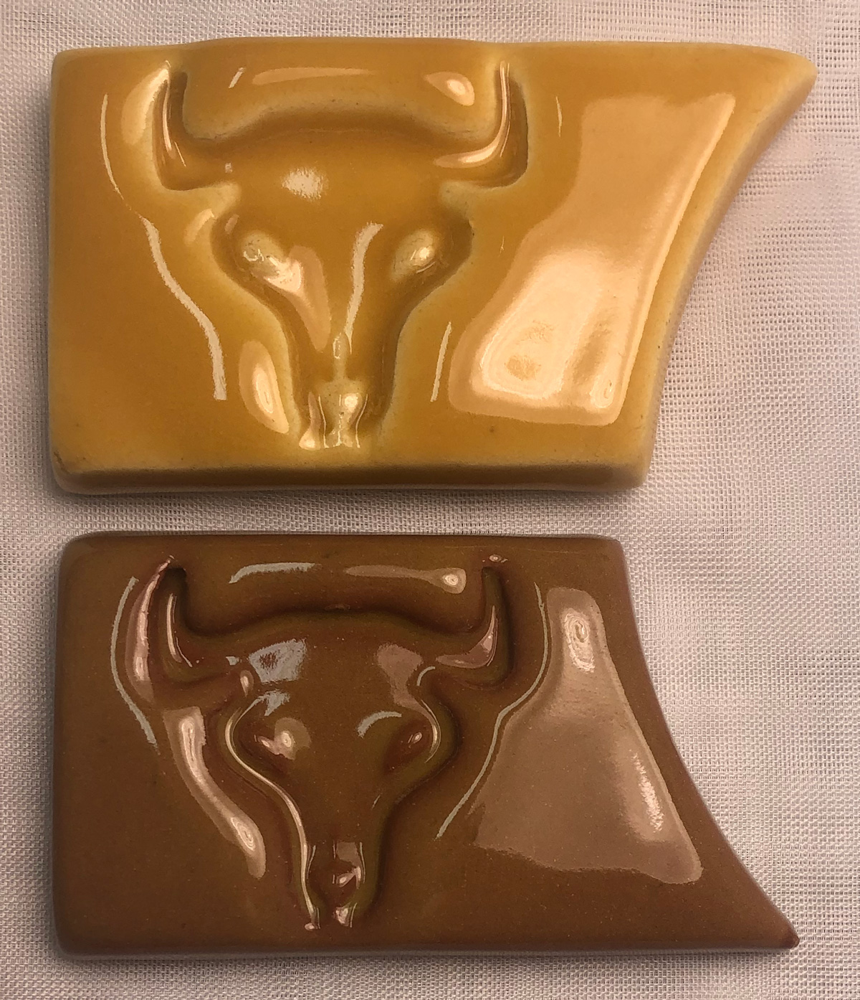
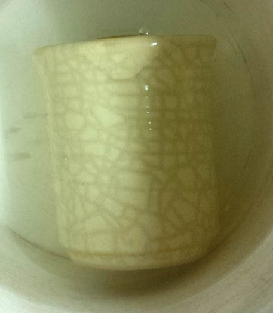
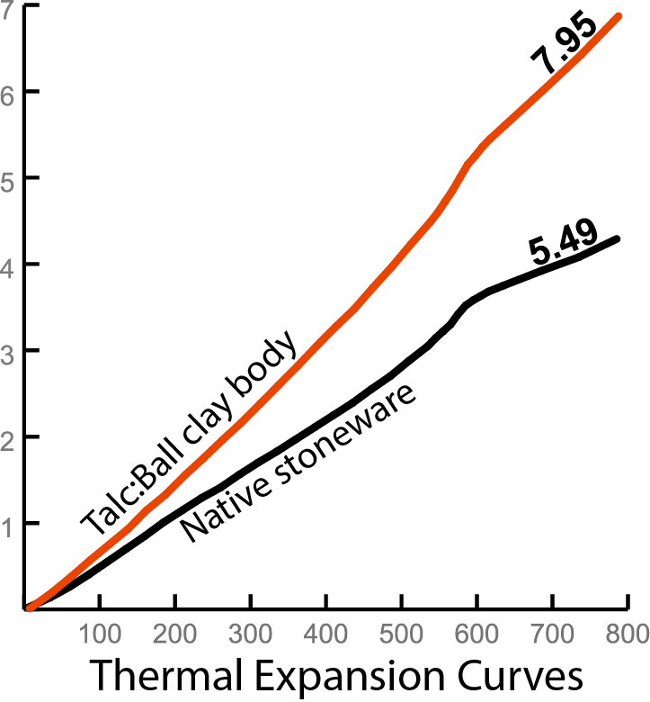
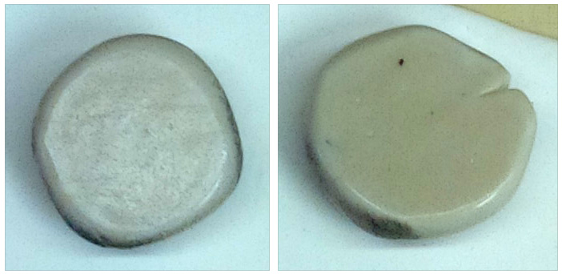
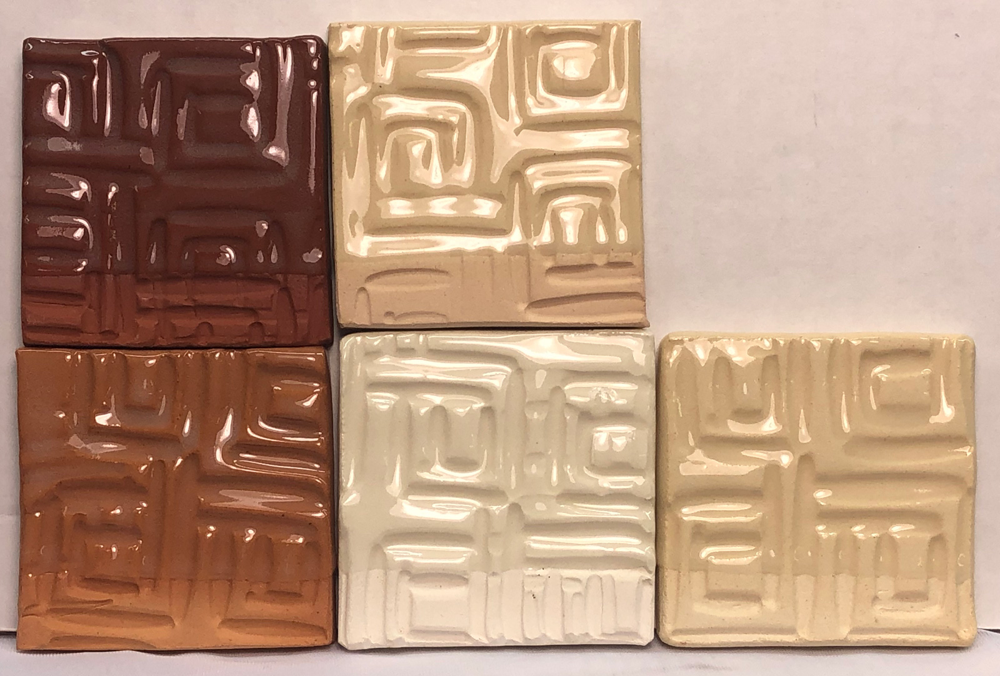
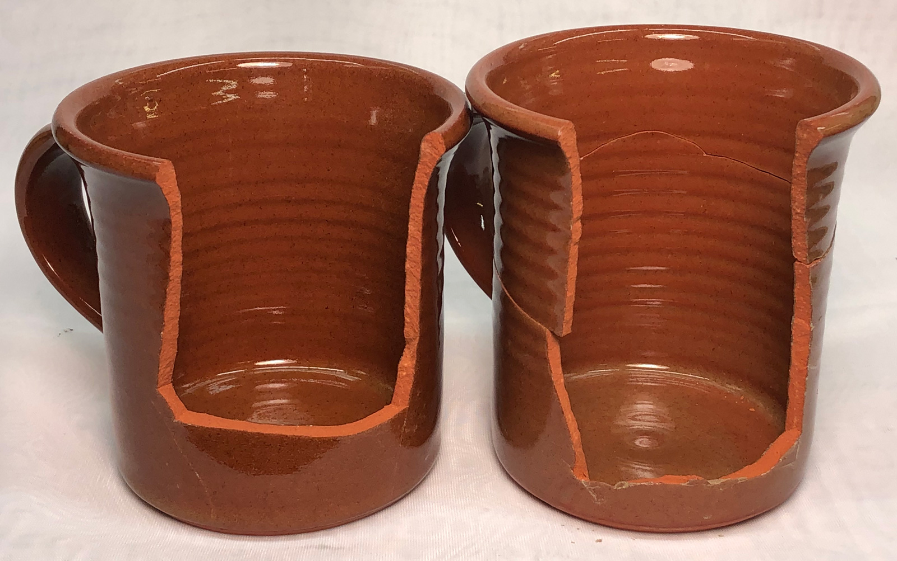
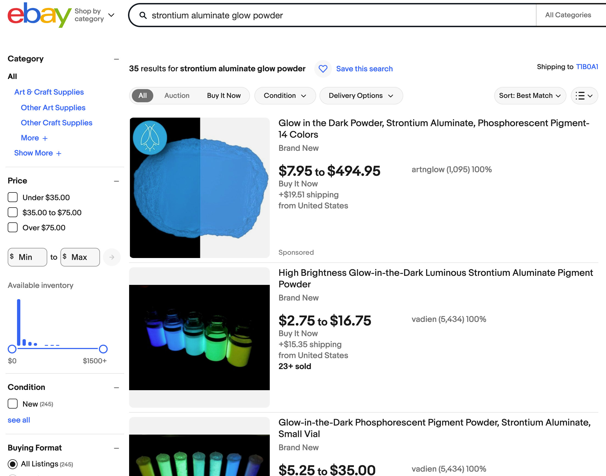

CELECG - Celestite Crystalline Glaze
FAAO - Fa's All-Opaque Crystalline Glaze
FAC5 - Crystal Number Five Glaze
FO - Octal Crystalline Glaze
G1214M - 20x5 Cone 6 Base Glossy Glaze
G1214W - Cone 6 Transparent Base
G1214Z1 - Cone 6 Silky CaO matte base glaze
G1215U - Low Expansion Glossy Clear Cone 6
G1216L - Transparent for Cone 6 Porcelains
G1216M - Cone 6 Ultraclear Glaze for Porcelains
G1916Q - Low Fire Highly-Expansion-Adjustable Transparent
G1947U - Cone 10 Glossy transparent glaze
G2000 - LA Matte Cone 6 Matte White
G2240 - Cone 10R Classic Spodumene Matte
G2571A - Cone 10 Silky Dolomite Matte glaze
G2826R - Floating Blue Cone 5-6 Original Glaze Recipe
G2826X - Randy's Red Cone 5
g2851H - Ravenscrag Cone 6 High Calcium Matte Blue
G2853B - Cone 04 Clear Ravenscrag School Glaze
G2896 - Ravenscrag Plum Red Cone 6
G2902B - Cone 6 Crystal Glaze
G2902D - Cone 6 Crystalline Development Project
G2916F - Cone 6 Stoneware/Whiteware transparent glaze
G2926B - Cone 6 Whiteware/Porcelain transparent glaze
G2926J - Low Expansion G2926B
G2928C - Ravenscrag Silky Matte for Cone 6
G2931H - Ulexite High Expansion Zero3 Clear Glaze
G2931K - Low Fire Fritted Zero3 Transparent Glaze
G2931L - Low Expansion Low-Fire Clear
G2934 - Matte Glaze Base for Cone 6
G2934Y - Cone 6 Magnesia Matte Low LOI Version
G3806C - Cone 6 Clear Fluid-Melt transparent glaze
G3838A - Low Expansion Transparent for P300 Porcelain
G3879 - Cone 04 Transparent Low-Expansion transparent glaze
GA10-A - Alberta Slip Base Cone 10R
GA10-B - Alberta Slip Tenmoku Cone 10R
GA10-D - Alberta Slip Black Cone 10R
GA10x-A - Alberta Slip Base for cone 10 oxidation
GA6-A - Alberta Slip Cone 6 transparent honey glaze
GA6-B - Alberta Slip Cone 6 transparent honey glaze
GA6-C - Alberta Slip Floating Blue Cone 6
GA6-D - Alberta Slip Glossy Brown Cone 6
GA6-F - Alberta Slip Cone 6 Oatmeal
GA6-G - Alberta Slip Lithium Brown Cone 6
GA6-G1 - Alberta Slip Lithium Brown Cone 6 Low Expansion
GA6-H - Alberta Slip Cone 6 Black
GBCG - Generic Base Crystalline Glaze
GC106 - GC106 Base Crystalline Glaze
GR10-A - Pure Ravenscrag Slip
GR10-B - Ravenscrag Cone 10R Gloss Base
GR10-C - Ravenscrag Cone 10R Silky Talc Matte
GR10-E - Alberta Slip:Ravenscrag Cone 10R Celadon
GR10-G - Ravenscrag Cone 10 Oxidation Variegated White
GR10-J - Ravenscrag Cone 10R Dolomite Matte
GR10-J1 - Ravenscrag Cone 10R Bamboo Matte
GR10-K1 - Ravenscrag Cone 10R Tenmoku
GR10-L - Ravenscrag Iron Crystal
GR6-A - Ravenscrag Cone 6 Clear Glossy Base
GR6-B - Ravenscrag Cone 6 Variegated Light Glossy Blue
GR6-C - Ravenscrag Cone 6 White Glossy
GR6-D - Ravenscrag Cone 6 Glossy Black
GR6-E - Ravenscrag Cone 6 Raspberry Glossy
GR6-H - Ravenscrag Cone 6 Oatmeal Matte
GR6-L - Ravenscrag Cone 6 Transparent Burgundy
GR6-M - Ravenscrag Cone 6 Floating Blue
GR6-N - Ravenscrag Alberta Brilliant Cone 6 Celadon
GRNTCG - GRANITE Crystalline Glaze
L2000 - 25 Porcelain
L3341B - Alberta Slip Iron Crystal Cone 10R
L3685U - Cone 03 White Engobe Recipe
L3724F - Cone 03 Terra Cotta Stoneware
L3924C - Zero3 Porcelain Experimental
L3954B - Cone 6 Engobe (for M340)
L3954N - Cone 10R Base White Engobe Recipe for stonewares
MGBase1 - High Calcium Semimatte 1 (Mastering Glazes)
MGBase2 - High Calcium Semimatte 2 (Mastering Glazes)
MGBase3 - General Purpose Glossy Base 1 (Mastering Glazes)
MGBase4 - Glossy Base 2 Cone 6 (Mastering Glazes)
MGBase5 - Glossy Clear Liner Cone 6 (Mastering Glazes)
MGBase6 - Zinc Semimatte Glossy Base Cone 6
MGBase7 - Raspberry Cone 6 (Mastering Glazes)
MGBase8 - Waxwing Brown Cone 6 (Mastering Glazes)
MGBase9 - Waterfall Brown Cone 6 (Mastering Glazes)
TNF2CG - Tin Foil II Crystalline Glaze
VESUCG - Vesuvius Crystalline Glaze
Insight-Live Shares
77C04E - 50:30:20 Frit 3134 cone 6 base
77E05B - Cone 10R Celadon - Luke Lindoe
77E06B - Lindoe Dark Celadon - Lower COE
77E14A - Cone 10R Red Mustard - Luke Lindoe
77E15A - Cone 10R Yellow Mustard - Luke Lindoe
84-G-05-S - Cone 10R Matte Crystal Iron - Luke Lindoe
G 304 - Cone 10R Crystal Iron Brown - Luke Lindoe
G1002 - LEACH'S CELADON CONE 10R
G1129 - MEDALTA CLEAR GLAZE CONE 8-10
G1214M - Hansen 20x5 Clear Cone 6 Base Glaze
G1214Z - Cone 6 Calcium Matte Base Glaze
G1214Z1 - Cone 6 Calcium Matte v2
G1214Z2 - Cone 6 Calcium Matte + TiO2
G1847 - Cone 10R Robin's Egg Blue
G1916M - COE Adjustable Low Fire Clear Glaze
G1916Q - Cone 05+ Expansion Adjustable Gloss Base
G1916Q2 - G1916Q glaze + 5% silica
G1916Q3 - G1916Q glaze + 10% silica
G1916QL - Cone 05+ Low Expansion Transparent glaze
G1916QL1 - Cone 05+ Lower Expansion glaze
G1916S - Cone 06-04 MgO Matte
G1916S1 - Cone 06-04 MgO (using talc)
G1916V - Cone 2 Clear (based on G1916Q)
G1916W - G1916Q with Iron Fining Agent
G1947U - Cone 10/10R Transparent Base
G2415E - Classic Albany Lithium Brown Glossy
G2415J - G2415E Alberta Slip Brown (less Li)
G2571A - Original Cone 10R Silky Matte Base Recipe
G2571B - Cone 10R Silky Matte Base (improved)
G2571BB - G2571B Rutile Bamboo
G2571C - Cone 10R Silky Matte Blue
G2571D - Cone 10R Silky Matte Red
G2571D1 - Cone 10 Marbled Red Glaze
G2571E - Cone 10R Silky Matte Black
G2576B - Cone 10R Tenmoku Glossy
G2584 - Cone 10R Blue Celadon
G2826A - 50:30:20 Gerstley Borate Cone 6 base
G2826A1 - 50:30:20 Frit 3134 base (fixed)
G2826A2 - 50:30:20 Gillespie Borate Cone 6 base
G2826A3 - 50:30:20 GB Makeover Pottery Glaze
G2826B - GB:Frit Raku Glaze
G2826F - GB Honey Amber 04
G2826G - GB Lavendar Satin Glaze Cone 6
G2826M - Gerstley Borate Antique Green Cone 5
G2826N - Gerstley Borate Raku Base NS/GB
G2826R - Floating Blue Original Cone 6 Glaze
G2826R1 - Floating Blue Using Gillespie Borate
G2826U - Floating Blue using Frit 3134
G2826V - Gerstley Borate Cream Oatmeal Cone 6 recipe
G2850C - Ravenscrag Cone 6 Black Glossy
G2850M-C - Ravenscrag Cone 6 Light Blue Matte
G2850P - TEAL BLUE CONE 6 KAT
G2851A - RAVENSCRAG SLIP Matte Blue - Cone 6
G2851AB - RAVENS FLOATING BLUE Cone 6
G2851D - KAT'S RC MATTE - Cone 6
G2851H - RAVENSCRAG Brown Gold Matte Cone 6
G2880 - Alberta Slip Tenmoku #1
G2880A - Alberta Slip Tenmoku #2
G2881B - Ravenscrag Alberta Slip Celadon
G2890B - Randy's Red Original Cone 6 Glaze
G2894 - Ravenscrag Tenmoku #1
G2894A - Ravenscrag Tenmoku #2
G2908A - Alberta Slip Floating Blue
G2917 - Ravenscrag Floating Blue
G2926 - Perkins Clear
G2926A - Perkins Clear with Frit 3134
G2926B - Cone 6 Clear Glossy Base
G2926BL - G2926B Cone 6 Gloss Black
G2926J - G2926B Reduced COE (Li2O)
G2926S - G2926B Reduced COE (MgO)
G2931 - Worthington Cone 06-2 Clear
G2931F - Zero3 Ulexite Transparent Glaze
G2931G - Zero3 G Low Expansion Low Fire Clear
G2931H - Zero3 H High Expansion Variant
G2931K - Zero3 K Cone 03 Transparent Glaze
G2931L - Zero3 L Low Expansion Variant
G2931L2 - Zero3 L Low Expansion w/F-69
G2932 - Deb's Clear #1 Cone 04-02
G2932A - Deb's Clear #2
G2933 - Gerstley:PV Clay low fire clear
G2934 - Cone 6 Magnesia Matte Base
G2934A - High Dolomite-Testing glaze
G2934BL - G2934 85:15 Adjustable Matte Black
G2934J - G2934 with ZnO for Brown Stains
G2934J1 - G2934 (glossed using ZnO)
G2934Y - G2934 (lower-LOI)
G2934Y1 - G2934Y (Anti-Crawling)
G2934Y2 - G2934Y (Higher COE/Stony)
G2934Y3 - G2934 Super Durable
G2934Y4 - G2934 Super Durable #2
G2934Z - G2934Y Red Using F-69
G2936 - Ravenscrag Low Expansion Cone 6 Base
G2936B - Ravenscrag Low Expansion White Base 2
G2936C - Ravenscrag Original Cone 6 Base Glaze
G2938 - Wright's Water Blue Base
G2941A - Leach's Satin Clear Original
G2941C - Leach's Satin Clear - Craze fix
G3806 - Panama Blue Cone 6
G3806A - Panama Blue 2 - More clay, Copper Oxide
G3806B - Panama Blue 3 - Copper Carbonate
G3806C - Panama Cone 6 Adjustment 2015
G3806D - Panama c6 - Lower COE #1
G3806E - Panama c6 - Lower COE #2
G3806F - Panama c6 - Lower COE #3
G3806K - Panama c6 - Lower COE #7
G3806N - C6 Fluid Clear Final Recipe #10
G3808 - Cone 6 Bright Clear - Shaun Mollonga
G3808A - Cone 6 Bright Clear using Frits
G3813 - Campana Cone 6 Transparent Glaze
G3813B - Campana Clear Lower Expansion #2
G3813C - Campana Clear Low Expansion (no Spodumene)
G3814 - Low Zinc High Feldspar Fritless base
G3822 - Spectrum Clear 700 Dipping Glaze
G3834 - Tenmoku Cone 6
G3840 - Shino Trial Number 1
G3868 - Gold - Cone 6
G3868A - Gold Using Spodumene
G3868B - Gold Using Fusion Frit 493
G3868C - Gold Using Frit #2
G3875 - Tangerine 4 (Orange)
G3875B - Zinc Clear cone 6
G3875C - Tangerine + Orange Stain
G3879 - Cone 04+ UltraClear Glossy Base
G3879C - Cone 04 UltraClear Low-Expansion
G3879E - Cone 04+ UltraClear Glossy Base
G3879F1 - Cone 04+ UltraClear Glossy Base
G3888 - Kieth Davitt High-fluid-melt copper blue
G3892 - Val Cushing Satin White #71
G3903 - Alberta Slip + Frit FZ-16
G3904 - Original Recipe Using Frit 3124
G3904A - 3134 Mistake Recipe Fixed
G3909 - Ravenscrag Cone 10R Matte Blue
G3910 - Fritted version of G1947U #1
G3910A - Fritted version of G1947U #2
G3912A - Surface Tension White Tin
G3914A - Alberta Slip Gloss Black
G3918 - Red Mustard in G2571A Base #1
G3925 - Perfect Clear
G3925B - Perfect Clear Make-Over #1
G3926B - G2926B with Tin/Zircopax
G3926C - G2934 White Tin/Zircopax
G3933 - G2934:G2926B Oatmeal - Cone 6
G3933A - G2934:G2926B Oatmeal Cone 6
G3933E - G3933 Oatmeal Ravenscrag #2
G3933EF - G3933 Oatmeal Ravenscrag #4
G3933G1 - G3933 Oatmeal Alberta Slip + Li
G3939A - Cone 6 Oxidation Marbled Red
G3948 - Red Orange Glazy Original
G3948A - Plainsman Iron Red Orange
G3948A1 - Red Orange - Plainsman Spodumene
G3948A3 - Red Orange - Plainsman Spodumene #2
G3955 - N505 Base Satin White - Opaque
G3966 - Cone 10R S2 - Luke Lindoe
G3971 - Lead Bisilicate Glaze
G3973 - Hilda Ross Rust
G4546 - Pattis Crystal Clear Cone 6
G4594 - 3B as a glaze
GA6-A - Oringal Alberta Slip Amber/Honey base
GA6-F - Alberta Slip Cone 6 Oatmeal
GR10-A - Ravenscrag Cone 10R Transparent Base
GR10-C - Ravenscrag Talc Matte
GR10-CW - Ravenscrag Cone 10R Talc Matte White
GR6-H - Ravenscrag Cone 6 Oatmeal
H0009 - 1945 MEDALTA FILTER CAKE
L2553B - Imco Carbondale Clay - C-Red
L2596E - H550 Casting Body #5
L2596F - H550 Casting Body #6
L2596G - H550 Casting Body #8
L2626 - Barnard Slip
L3127E - Boraq 1
L3127G - Boraq 2
L3127I - Boraq 3
L3127N - Boraq 5 #4 (available materials)
L3146A - Foundry Hill Creme+Nepheline
L3146B - New Foundry Hill Creme
L3146C - FHC + Kyanite
L3146D - FHC + Pyrax
L3164A - Cordierite Flameware - more bentonite, added grog
L3500 - Alberta Slip Original cone 6 base glaze
L3500G - Alberta Slip + Frit 3249
L3500H - Alberta Slip + Frit 3249 and Silica
L3523 - Cone 04 Gerstley Borate matte base
L3523A - Compare Boraq 5 #1 with GB in a glaze
L3523B - L3523 glaze using Boraq 5 L3127L
L3523C - L3523 glaze using Boraq 5 L3127M
L3523D - L3523 recipe using Boraq 5 L3127N
L3617 - Cornwall Stone substitute #2
L3619 - Cornwall Stone Average Analysis
L3660C - Flameware - Very High Pyrax with Molochite
L3660G - Pyrax/Kaolin Flameware
L3660P - Pyrax Flameware (low fire)
L3664A - PV CLAY Feb 2013 Shipment
L3673 - Laguna Barnard Slip Sub
L3685U1 - Zero3 Engobe Recipe
L3685Y - Cone 03 Terrastone 2 Engobe
L3685Z2 - Z2 White Cone 04 Engobe Base (no frit)
L3685Z3 - Z3 White Cone 04 Engobe (5% frit)
L3685Z5 - White Cone 04 Engobe for L4170B (3% frit)
L3685Z6 - Brown Engobe for Snow
L3685Z7 - Cone 04 Brown Engobe for Snow
L3685Z8 - White Cone 2 Engobe for L215, L210, L4170B (2% frit)
L3693E - Alumina Lining for Crucibles
L3693E1 - Zircon Lining for Crucibles
L3693H1 - Plastic Refractory Alumina Body H1
L3724M1 - Redart Fritware #4
L3724M2 - Redart Fritware #5
L3724N - Redart Fritware #1
L3724N2 - Zero3 Stoneware
L3724P - Redart Fritware #2
L3728 - Cone 6 Dolomite Testing Glaze
L3778D - Cone 6 Translucent Grolleg Plastic
L3778D1 - Cone 6 Grolleg Pink/Blue Porcelains
L3778G - Cone 6 Translucent Grolleg Casting
L3798C - M340 Casting Body
L3798G - M340C Casting Body Revision 7
L3802E - Crystal Ice - Cone 10
L3806L - Panama c6 - Lower COE #8
L3840 - Diatomaceous Earth (Ant Killer)
L3868 - Craft Crank - From PotClays, UK
L3868A - Craft Crank - Base
L3868C - Craft Crank Clone 2
L3869 - Crank Industrial - From England
L3869A - Industrial Crank Base
L3894D - PV Calc Mix 4
L3906 - P300 Cone 6 Casting Body
L3911 - Bizen Clay
L3916 - Bizen Duplicate using Plainsman Materials
L3924C - Zero3 Porcelain - Experimental
L3924J - Zero4 Plastic Porcelain
L3924L - Zero4 Casting Porcelain
L3954B - Cone 6 White Engobe Recipe
L3954F - Cone 6 Black Engobe
L3954J - Black Cone 10 Whiteware Engobe Recipe
L3954N - Cone 10 Engobe for H550
L3954R - Super-White Engobe for Cone 6
L3954S2 - White Engobe for M340, M390, L215, L210
L3972 - 98 Mix
L3977 - BGP Low Stoneware Body
L4001 - Plainsman Super Kiln Wash
L4005D - M390 Casting Version 5
L4023F - Proposed H440 Casting Body #5
L4028 - G2571A Rutile Bamboo
L4053B - Cone 6 Black Clay Body - Type 1
L4068 - Barnard Chemical Substitute
L4115J3 - L211 Stnwre 3D:OM4:NS
L4115L2 - L211 3D:OM4:NS:Talc 42 mesh
L4115L2a - L211 3D:OM4:NS:Talc 80 mesh
L4158 - Cimtalc 15 Talc lab test
L4159 - Cimtuff 9115 Talc lab test
L4163 - Red Art Cone 1 Clay Body
L4168G5 - H440C (concentrate) #5
L4168G9 - New H440 Functional Proposal #8
L4170 - L215 Terra Cotta Casting #1
L4170B - Terra Cotta Casting #2
L4170F - Terra Cotta Casting #3
L4208C - MNS Cone 6 Fine Stoneware
L4208D - 3B +200# particles sieved out
L4217G - M370-like Cone 6 Faster Casting
L4227 - Plus Clay
L4228 - Fimo Clay
L4237 - Redart Tile Body
L4239 - H550 Casting Body #7
L4244 - BGP Clay:Flyash F 50:50 Mix
L4244A - Flyash F:Bentonite 10:90
L4245 - LaFarge Fly Ash F:Bentonite 95:5 Mix
L4245F - Fly Ash F:Bentonite:BallClay 80:10:10
L4246 - A2 +200# particles sieved out
L4247 - A3 +200# particles sieved out
L4248 - Old Hickory M23 Ball Clay
L4249 - 3D +200# particles sieved out
L4249A - 3D MNS 325 Mesh
L4249B - 3D 100 mesh
L4264 - Raku Crackle Glaze Base - Frit 3110
L4264A - Raku Glaze Base #1
L4264B - Raku Glaze Base #2
L4264C - Raku Glaze Base #3
L4264D - Raku Glaze Base #4
L4273 - G3806N1 + 2% Zircopax
L4280 - L215 : M390 Mix for Cone 1 Stoneware
L4287 - Midfield Clay Yukon
L4287A - Catchment Clay Yukon
L4292 - Monte Marte Air Hardening Clay
L4293 - DAS Air Drying Clay
L4294 - Sculpey PE08 Oven Bake Clay
L4398 - Ravenscrag Cone 6 Raspberry
L4404A - Refractory Casting Slip
L4404B - Plastic Refractory (heavy duty)
L4404C - Refractory Plastic (low expansion)
L4404D - Refractory Casting (low expansion)
L4410L - L213 NS:Dolo 30:20
L4410P - L213 40:10 Dolo/NS
L4421 - Seed pelleting clay and binder
L4441A - Minspar
L4441B - Minspar Calculated Substitute
L4453C - 3D:A2 Body Base H550 Blend
L4458 - Lithium Flameware Test
L4482B - Alumina Wadding #2
L4484D - 2018 3B+6% 6666 at 100#
L4498 - Low Expansion Super White Cone 6 Fritware
L4498A - Low Expansion Fritware Casting
L4530 - Carbondale M390 #1
L4530A - Carbondale M390 #2
L4532A - Pyrometric cone pressing body #2
L4532B - Cone pressing body #3
L4532D - Cone pressing body #5
L4532F - Cone 5 Cone-casting v.1
L4543 - Firebrick & kiln post/shelf clay - v1.0
L4543B - Firebrick & kiln post clay v2.0
L4543C - Refractory kiln post clay v4.0
L4557 - Volumetric Screw Feeder Design - ESP32 based
L4558 - M390 Casting (M370+C-Red)
L4558A - M390 Cone 6 C-Red Casting #1
L4558B - M390 Cone 6 C-Red Casting #2
L4567 - Cat Litter
L4575 - SIAL Refractory Slip
L4575A - SIAL refractory slip Duplicate
L4588 - Red NZK Cone 6 Porcelain
L4597 - Luke Lindoe Fired Samples
L4599 - Slip for Slipware
L4599A - Slip for Slipware - #5 Ball Clay
L4608 - Kyanite Bisque-Fix, Kiln-Patch
L4655 - Titanium Dioxide in GA6-C
L4655A - GA6-C Titanium + Iron
L4655B - GA6-C Lower Thermal Expansion
L4696 - Cordierite Flameware
L4697 - Flameware body from French mfgr
L4705A - GA6-C Using Frit 3195 and Titanium
L4768D - Cone 6 Black Casting Body - Type 2
L4768E - Cone 6 Black Casting Body - Type 3.1
L4768H - Cone 6 Black Casting Body - Type 3.3
L4807 - M370-like Super-Fast Casting Porcelain
MHSCUL - MASTER RedArt Sculpture Clay
MRG6B - G2850A Ravenscrag Cone 6 Light Blue
MRG6C - Ravenscrag Cone 6 White Glossy
MRG6E - G2850P Ravenscrag Cone 6 Raspberry
MRG6G - G2851H Ravenscrag Cone 6 Light Blue Matte
P4738A - 98 BGP RETEST
P4808 - 45D
P5867 - Sculpture Clay
P6385 - M2 ST
P6821 - L215 Production Run - Mar 2020
P7088 - H440
PC-32 - Amaco Glaze: PC-32 Albany Brown
Insight-Live Shares (also referencing this recipe)
These add technical detail, development info, variations and improvements.
G1916Q - Low Fire Highly-Expansion-Adjustable Transparent
Modified: 2022-04-08 09:52:50
An expansion-adjustable cone 04 transparent glaze made using three common Ferro frits (low and high expansion), it produces an easy-to-use slurry.
| Material | Amount |
|---|---|
| Ferro Frit 3195 | 65.00 |
| Ferro Frit 3110 | 10.00 |
| Ferro Frit 3249 | 10.00 |
| No. 5 Ball Clay | 15.00 |
| 100.00 | |
Notes
This recipe can produce a super-transparent surface of high quality at cone 04. It has good application properties (if mixed properly, see below) and melts to a clear at cone 04-02. All of the frits are commonly available. Remember that cone 06 firing produces a poor glaze:body bond, we recommend firing cone 04 or 03 if possible (ware strength also increases greatly). This glaze can be made to fit pretty well any clay body (by adjustment in frit proportions). We recommend drop-and-hold firing, for example, the 04DSDH schedule.
There are three frits:
-Frit 3195 is almost a complete glaze on its own, it just needs a little kaolin. It fires slightly silky rather than completely glossy but with the addition of one of the frits below a high gloss is achieved. But it is somewhat above middle-of-the-road for thermal expansion (the 85:15 frit:clay variation, G1916J, will craze on most of our clay bodies).
-Frit 3110 is super high expansion and high gloss. Blend it with Frit 3195 it to deal with shivering.
-Frit 3249 is super low expansion and high gloss. Blend it with Frit 3195 to deal with crazing. In one variation we employ 30% of this and
For example, to fit Plainsman Buffstone at cone 04 we find that a 55:30:15 3195:3249:Ball Clay mix works well.
This frit-juggling strategy affords a wide range of adjustment for tuning the glaze fit to a body, a very important matter at low temperatures where crazing and shivering can occur with even slight thermal expansion misfit. In some situations using only Frit 3195 and ball clay might be ok. However, we recommend to 65:10:10 frit mix because the 3249 and 3110 cancel out each other's thermal expansion influence and increase the gloss of the otherwise silky 3195. The presence of 3249 also reduces boron blue issues. Stress-test the fit by subjecting a piece of thin-walled ware to boiling-water-into-ice-water (and vice versa) immersion. This will reveal a misfit that will happen with time.
There can be issues with clouding. While it is well known that high boron glazes, which this is, have issues with clouding, by experience we know that this most often fires crystal clear (likely because of its unusually high silica:alumina content). Thinner application is the best way to deal with the problem. If a dipping glaze goes on too thick using normal techniques consider bisquing higher to reduce its porosity.
This recipe employs #5 ball clay, a material known to produce good glaze slurries. No. 1 Glaze ball clay is another. We have made quite a few adjustments to this recipe (involving switching to kaolin as a suspender, adding more silica, opacifying, adjusting temperature), these include G1916Q2, G1916Q3, G3916, even G1916V for cone 2).
To achieve even coverage it is a good idea to employ a thixotropic slurry (one that gels slightly). The 15% ball clay is plenty to suspend the slurry. But if you switch to kaolin a little bentonite might be needed.
Related Information
4% rutile in a low temperature transparent glaze

This picture has its own page with more detail, click here to see it.
The glaze is G191T (a variation of G1916Q). Firing was cone 04 drop-and-hold with slow cool. Sometimes a raw colorant is advisable over a ceramic stain. At low temperatures stains are almost universal. But in this case, the orangey-yellow color that rutile produces merits further testing. On the red body (Plainsman L215) the color is barely perceptible, but on the light Buffstone body it is working well. The variations in thickness highlight contours better than what a stain would do.
How to adjust the G1916Q low fire clear glaze when it crazes

This picture has its own page with more detail, click here to see it.
This is Plainsman Buffstone, fired at cone 04. The piece emerged from the kiln without crazing. The mug was heated to 300F and plunged into ice water (the 300F-to-ice-water IWCT test). This is what happened. Water is being absorbed into the porous body through the craze lines. This is G1916J, a variation on the G1916Q recipe. J is just two materials, 85% Ferro Frit 3195 and 15% EPK. What recipe adjustment is needed? Substitute some of the Frit 3195 for low expansion Frit 3249. We have found that a 55:30:15 of 3195:3249:EPK recipe will work. Since both 3195 and 3249 melt transparent at cone 04, blending them together does not change the appearance (actually, 3249 is glossier and actually improves the surface).
High thermal expansion talc body cannot be COE-calculated

This picture has its own page with more detail, click here to see it.
Talc is employed in low-fire bodies to raise their thermal expansion (to put the squeeze on glazes to prevent crazing). These dilatometer curves make it very clear just how effective that strategy is! The talc body was fired at cone 04 and the stoneware at cone 6. The former is porous and completely non-vitreous and the latter is semi-vitreous. This demonstrates something else interesting: The impracticality of calculating the thermal expansion of clay bodies based on their oxide chemistry. Talc sources MgO and low fire bodies containing it would calculate to a low thermal expansion. But the opposite happens. Why? Because these bodies are composed of mineral particles loosely sintered together. A few melt somewhat, some change their mineral form, many remain unchanged. The body's COE is the additive sum of the proportionate populations of all the particles. Good luck calculating that!
These common Ferro frits have distinct uses in traditional ceramics

This picture has its own page with more detail, click here to see it.
I used Veegum to form 10 gram GBMF test balls and fired them at cone 08 (1700F). Frits melt really well, they do have an LOI like raw materials. These contain boron (B2O3), it is a low expansion super-melter that raw materials don’t have. Frit 3124 (glossy) and 3195 (silky matte) are balanced-chemistry bases (just add 10-15% kaolin for a cone 04 glaze, or more silica+kaolin to go higher). Consider Frit 3110 a man-made low-Al2O3 super feldspar. Its high-sodium makes it high thermal expansion. It works really well in bodies and is great to make glazes that craze. The high-MgO Frit 3249 (made for the abrasives industry) has a very-low expansion, it is great for fixing crazing glazes. Frit 3134 is similar to 3124 but without Al2O3. Use it where the glaze does not need more Al2O3 (e.g. already has enough clay). It is no accident that these are used by potters in North America, they complement each other well (equivalents are made around the world by others). The Gerstley Borate is a natural source of boron (with issues frits do not have).
Micro bubbles in low fire glaze. Why?

This picture has its own page with more detail, click here to see it.
Left: G1916Q transparent fired at cone 03 over a black engobe (L3685T plus stain) and a kaolin-based low fire stoneware (L3685T). The micro-bubbles are proliferating when the glaze is too thick. Right: A commercial low fire transparent (two coats lower and 3 coats upper). A crystal clear glaze result is needed and it appears that the body is generating gases that cause this problem. Likely the kaolin is the guilty material, the recipe contains almost 50%. Kaolin has a 12% LOI. To cut this LOI it will be necessary to replace some or all of the kaolin with a low carbon ball clay. This will mean a loss in whiteness. Another solution would be diluting the kaolin with feldspar and adding more bentonite to make up for lost plasticity.
What does it take to get a crystal-clear low fire transparent? A lot!

This picture has its own page with more detail, click here to see it.
These three cups are glazed with G1916S at cone 03. The glaze is the most crystal clear achieved so far because it contains almost no gas producing materials (not even raw kaolin). It contains Ferro frits 3195 and 3110 plus 11 calcined kaolin and 3 VeeGum. Left is a low fire stoneware (L3685T), center is Plainsman L212 and right a vitreous terra cotta (L3724F). It is almost crystal clear, it has few bubbles compared to the kaolin-suspended version. These all survived a 300F/icewater IWCT test without crazing!
How much does a glaze need to melt before it sticks to the body well?

This picture has its own page with more detail, click here to see it.
The back flat side of balls of 1916J and Q low fire glaze that melted into a dome shape after being fired to 1550F. They have been turned over to see the back side (the front side is still stained by volatilizing carbon). Clearly they have reached zero porosity and are beginning to melt, yet they have not adhered to the vitreous porcelain tile! This demonstrates the degree to which an engobe must melt to secure itself well to the underlying body.
Turning delayed crazing into immediate crazing

This picture has its own page with more detail, click here to see it.
This is a cone 04 clay (Plainsman Buffstone) with a transparent glaze (G1916Q which is 65% Frit 3195, 20% Frit 3110, 15% EPK). On coming out of the kiln, the glaze looked fine, crystal clear, no crazing. However, when heated to 300F and then immersed into ice water this happens. This is the IWCT test. At lower temperatures, where bodies are porous, water immediately penetrates the cracks and begins to waterlog the body below. Fixing the problem was easy: Substitute the low expansion Frit 3249 for high expansion Frit 3110.
G1916Q on L215, L212, L210, L213, Buffstone at cone 03

This picture has its own page with more detail, click here to see it.
The G1916Q recipe uses common Ferro frits and can be made to fit any low fire clay body (the thermal expansion is adjustable). And it melts well down to cone 05. And we have a strategy to reduce clouding and micro-bubbling. These five test tiles were fired using the 04DSDH schedule (drop-and-hold) firing schedule. All exited the kiln without crazing. The L215, L213, L210 and L212 samples subsequently survived a 300F/Icewater test without crazing, but the Buffstone did not - it needs a lower thermal expansion (by increasing Frit 3249 and reducing Frit 3110, e.g. 15:5 instead of 10:10). The L213 would not likely survive a cold-to-hot test without shivering - it needs a higher thermal expansion (by increasing Frit 3110 at the expense of Frit 3249).
There is a secret to the clarity of this terra cotta glaze

This picture has its own page with more detail, click here to see it.
The body is Plainsman L215 and the glaze is G1916Q. Both were thinly applied and fired using the 04DSDH schedule. The glaze has 2% iron oxide added and sieved to 80 mesh. The iron reddens the color and its particles act as a fining agent to reduce micro-bubble population. The one fired to cone 03 (left) is considerably stronger, better surviving the stress of successive impacts with a hammer. However, it has minute surface dimples, likely from decomposition beginning in the body. The mug on the right fired to cone 04, only slightly above the 05 bisque. The glaze surface is much better, almost crystal clear. A big advantage of cone 04 and cooler is that ware can be fired on stilts (enabling glazing the bottoms).
2% iron oxide in a glossy terra cotta glaze gives better color, less clouding

This picture has its own page with more detail, click here to see it.
Both pieces are the same clay body, Plansman L215. Both are fired to cone 03. Both are glazed using G1916Q borosilicate recipe. The glaze on the piece on the left has 2% added iron oxide (sieved to 80 mesh). Each particle or agglomerate of iron (which is refractory in this situation) acts to congregate the micro-bubbles so they can better exit the glaze layer. Notice also how much richer the color is as a result. The piece on the right, without the added iron oxide, is neither as red nor as transparent. Of course, I had to be careful not to apply the glaze too thickly on both.
G1916Q transparent on terra cotta body at cone 06, 05, 03

This picture has its own page with more detail, click here to see it.
The body is Plainsman L215. We used the 04DSDH firing schedule. The G1916Q glaze is inexpensive to make so we have a 2-gallon bucket. It has dipping properties much like a stoneware glaze (because of the 15% ball clay it is thixotropic) so it is easy to apply quickly and evenly. For most terra cottas, body strength increases dramatically by cone 03. However, the most transparent and glassy glaze surface happens at cone 06. Terra cotta bodies need to be bisque-fired fairly low (e.g. cone 06) to have enough porosity to work well with dipping glazes. After cone 04 they generate increasing amounts of gases (as various particle species decompose within), for this reason the glazes can have more micro-bubble clouding or tiny dimples in the surface. This glaze has 2% iron oxide added as a fining agent to remove the bubbles. That iron also reddens the color and variegates the surface somewhat. Even though the surface character at cone 03 is not as smooth, it has a natural charm, and the color is very rich. And that piece has stoneware durability and strength.
The next supply crisis will hit commercial glazes first.
Cope better this time by knowing DIY glaze mixing.

This picture has its own page with more detail, click here to see it.
As potters, we learned that no one is affected by supply chain problems more than prepared glaze manufacturers; they have complex recipes that require complex supply chains. It wasn't just availability; product consistency was also affected. It is again time to think about DIY, to start learning how to weigh out the ingredients to make at least some of your own. Arm yourself with good base recipes that fit your clay bodies (without crazing or shivering). Add stains, opacifiers and variegators to the bases to make anything you want. Admittedly, ingredients in your recipes can also become unavailable! But DIY as about options. When you "understand" glaze ingredients and what each contributes to the recipe and oxide chemistry, you are equipped to go well beyond weathering material supply issues. You will improve recipes, not just adjust them, to accommodate alternative materials. It is not rocket science; it is just work accompanied by organized record-keeping and good labelling.
Low Temperature Heaven:
Commercial underglazes, make your own clear overglaze

This picture has its own page with more detail, click here to see it.
Decorate ware with the underglazes at the leather hard stage, dry and bisque fire it and then dip-glaze in a transparent that you make yourself (and thus control). These mugs are fired at cone 03. All have the same transparent glaze (G2931K), all were decorated with the same underglazes. Notice how bright the colors are compared to middle or high temperature. On the left is a porous talc/stoneware blend (Plainsman L212), rear is a fritted Zero3 stoneware and right is Zero3 fritted porcelain. When mixed properly you can dip ware in this glaze and it covers evenly, does not drip and dries enough to handle in seconds! Follow the Zero3 firing schedule and you will have ware of amazing quality.
Glow in the dark glazes

This picture has its own page with more detail, click here to see it.
While these are available as commercial products you may want to mix your own to get maximum flexibility in surface character and color intensity. The key is phosphorescent pigments added to a transparent base recipe. The pigments are often made from strontium aluminate doped with rare earth elements like europium and dysprosium. This eBay search reveals they are readily available (using the search 'strontium aluminate glow powder'). While expensive, they are much less so than materials like cobalt oxide or lithium carbonate. These pigments are known for their long-lasting glow compared to older zinc sulfide-based products. It would be best to start at low temperatures, cone 04-06. Consider trying the G1916Q glaze base recipe first (then G3879, if you can get the frit). The Q recipe is temperature, thermal expansion and gloss adjustable (using different frits and frit mixtures). A common starting point is 10-20% pigment by weight.
Links
| Recipes |
L3685U - Cone 03 White Engobe Recipe
A white burning body with enough added frit to produce a cone 03 stoneware or white slip for use on the matching red Zero3 stoneware. |
| Recipes |
L3724F - Cone 03 Terra Cotta Stoneware
An experimental Zero3 using Plainsman 3D clay |
| Recipes |
G2931K - Low Fire Fritted Zero3 Transparent Glaze
A cone 03-02 clear medium-expansio glaze developed from Worthington Clear. |
| Glossary |
Flocculation
The flocculation process enables technicians in ceramics to create an engobe or glaze slurry that gels and goes on to ware in a thick yet even, non-dripping layer. |
| Glossary |
Thixotropy
Thixotropy is a property of ceramic slurries of high water content. Thixotropic suspensions flow when moving but gel after sitting (for a few moments more depending on application). This phenomenon is helpful in getting even, drip-free glaze coverage. |
| Glossary |
Glaze shivering
Shivering is a ceramic glaze defect that results in tiny flakes of glaze peeling off edges of ceramic ware. It happens because the thermal expansion of the body is too much higher than the glaze. |
| Glossary |
Glaze fit
In ceramics, glaze fit refers to the thermal expansion compatibility between glaze and clay body. When the fit is not good the glaze forms a crack pattern or flakes off on contours. |
| Glossary |
Transparent Glazes
Every glossy ceramic glaze is actually a base transparent with added opacifiers and colorants. So understand how to make a good transparent, then build other glazes on it. |
| Glossary |
Low Temperature Glaze
In ceramics, glazes are loosely classified as low, medium and high temperature. Low temperature is in the cone 06-2 range (about 1800F-2000F). |
| Glossary |
Base Glaze
Understand your a glaze and learn how to adjust and improve it. Build others from that. We have bases for low, medium and high fire. |
| Articles |
G1916M Cone 06-04 transparent glaze
This is a frit based boron glaze that is easily adjustable in thermal expansion, a good base for color and a starting point to go on to more specialized glazes. |
| Materials |
Ferro Frit 3195
A commonly used boron frit, it is a balanced glaze all along at cone 06-02 (with the addition of 10-15% kaolin). Not fully glossy. |
 PayPal | No tracking, No ads, No paywall, No transient content! Just organized, concise information constantly updated and improved. Was this helpful? Consider supporting me. |
XML to Paste Into Insight-live
<?xml version="1.0"?> <recipes version="1.0" encoding="UTF-8"> <recipe name="Low Fire Highly-Expansion-Adjustable Transparent" keywords="An expansion-adjustable cone 04 transparent glaze made using three common Ferro frits (low and high expansion), it produces an easy-to-use slurry." id="122" date="2022-04-08" codenum="G1916Q"> <recipelines> <recipeline material="Ferro Frit 3195" amount="65.000"/> <recipeline material="Ferro Frit 3110" amount="10.000"/> <recipeline material="Ferro Frit 3249" amount="10.000"/> <recipeline material="No. 5 Ball Clay" amount="15.000"/> <url url="https://digitalfire.com/recipe/122" descrip="https://digitalfire.com/recipe/122"/> </recipelines> <urls/> </recipe> </recipes>
| By Tony Hansen Follow me on        |  |
Got a Question?
Buy me a coffee and we can talk 

https://digitalfire.com, All Rights Reserved
Privacy Policy